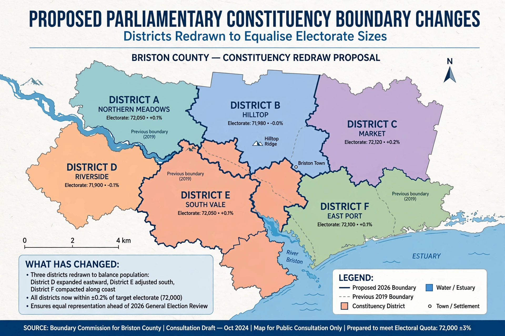

A boundary commission is an independent body charged with reviewing and redrawing electoral district boundaries, typically to keep districts roughly equal in population as demographics change. Boundary commissions are used in many democracies as an alternative to having politicians draw electoral maps themselves.
In the United Kingdom there are four boundary commissions, for England, Scotland, Wales and Northern Ireland. They conduct periodic reviews of the boundaries of constituencies for the Parliament of the United Kingdom, applying statutory rules on electorate size and geographic considerations, and consult publicly on their proposals.
Canada uses independent electoral boundaries commissions for each province after each decennial census. Australia performs redistributions through the Australian Electoral Commission. In the United States, where legislatures traditionally draw boundaries, some states — such as California and Arizona — have adopted independent citizens' redistricting commissions to reduce gerrymandering.
The central purposes of a boundary commission are to maintain the principle of equal votes (each district having a similar number of electors), to respect community ties and geographic features, and to insulate the map-drawing process from partisan manipulation.